WHAT WE GROW
Seedlings, Flowers & Herbs
Started in our own greenhouse, planted in our own beds, and sold a short walk from where they were grown.
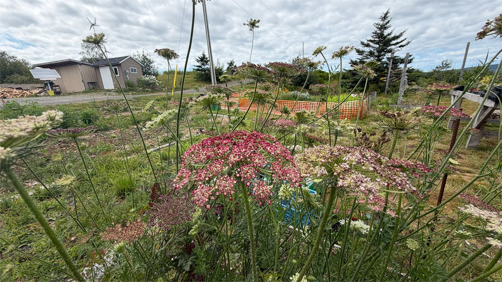
THROUGH THE YEAR
What's Ready, and When
A farm season doesn't run to a neat schedule, but this is roughly how ours goes.
SPRING
Seedling Season
This is the busiest stretch and the best time to come. The greenhouse and benches fill up with vegetable, flower and herb starts, ready to go into your garden as soon as the risk of frost has passed.
Popular things go quickly, so it's worth coming early or asking us to hold something back for you.
SUMMER
Flowers at Their Peak
Seedlings are still available while stock lasts, and the cut flower beds take over. Bouquets, single stems and jars of whatever is looking best that morning.
This is when the dahlias, sunflowers and snapdragons really get going, and when the bouquets are at their most colourful.
AUTUMN
The Long Finish
Autumn brings on plants that have been growing all season and are ready to go out, along with the flowers that keep producing right up until the first hard frost.
It's a quieter, and in some ways nicer, time to visit. The light is better and there's more time to talk.
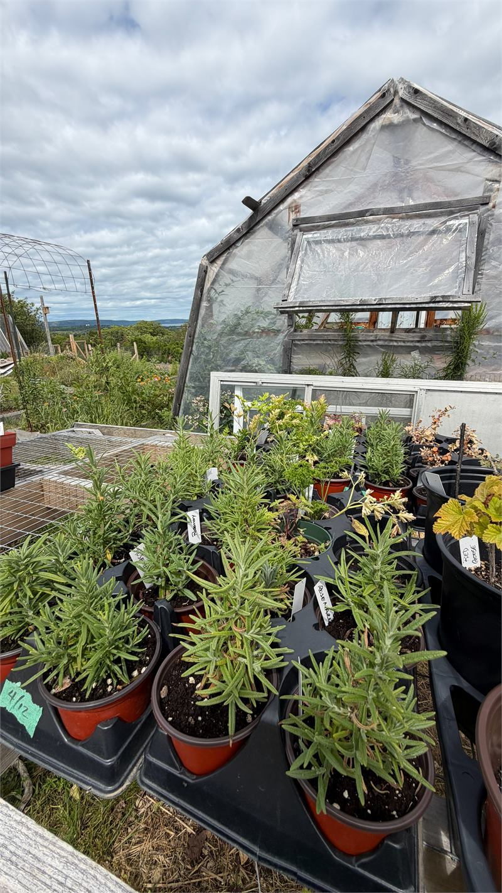
SEEDLINGS
A Garden's Worth of Starts
We grow seedlings for the kind of garden most people actually have. Vegetables that will crop in a Nova Scotia summer, flowers that will keep going without much fussing, and herbs that will earn their place by the back door.
If you're new to it, tell us what you're working with. A sunny raised bed, a shady corner, a row of pots on a deck. We'll steer you toward things that will do well rather than things that merely look good on the bench.
- Grown from seed on the farm
- Hardened off before they're sold
- No chemical sprays
- Honest advice, freely given
CUT FLOWERS
Picked This Morning, Not Last Week
Our bouquets are cut from the beds you can see from the driveway. Nothing is imported, nothing has been sitting in cold storage, and nothing has been on a plane. That's the whole idea behind grown, not flown.
The practical difference is that they last. A bouquet cut the same day will still be looking well over a week later, and it will smell like a garden rather than like nothing at all.
We put together mixed bouquets, and we're happy to make something up for a particular occasion if you let us know a little ahead of time.
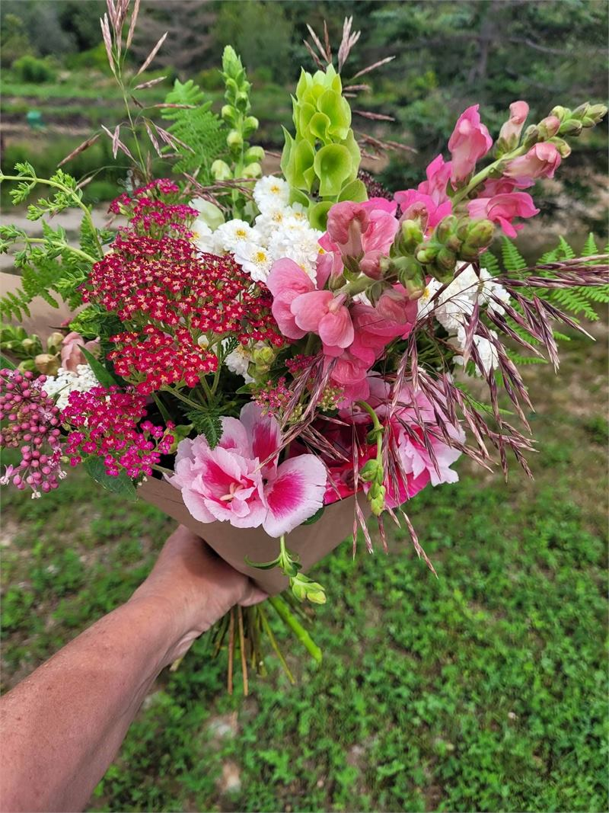
Some of What Grows in the Flower Beds
The list shifts with the season and the year. This is a taste of it rather than a catalogue.
- Dahlias
- Sunflowers
- Snapdragons
- Hollyhocks
- Lavender
- Yarrow
- Marigolds
- Bells of Ireland
- Poppies
- Cosmos
- Zinnias
- Peonies
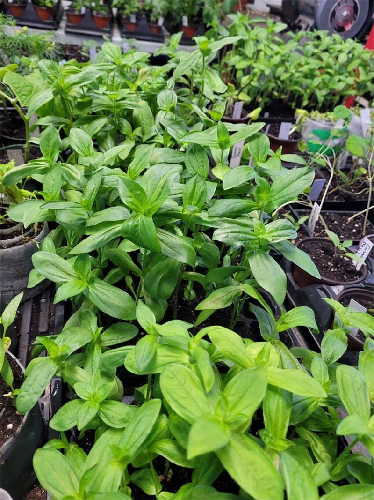
HERBS
The Most Useful Thing in Any Garden
If you only have room for a few pots, make them herbs. They're forgiving, they take up almost no space, and they change how you cook more than any other plant for the money.
We sell them as sturdy young plants rather than as cuttings, so they'll keep going for you at home. The hardy ones will come back year after year with almost no help from you at all.
THE BEDS AND THE BENCH
A Season in Photographs
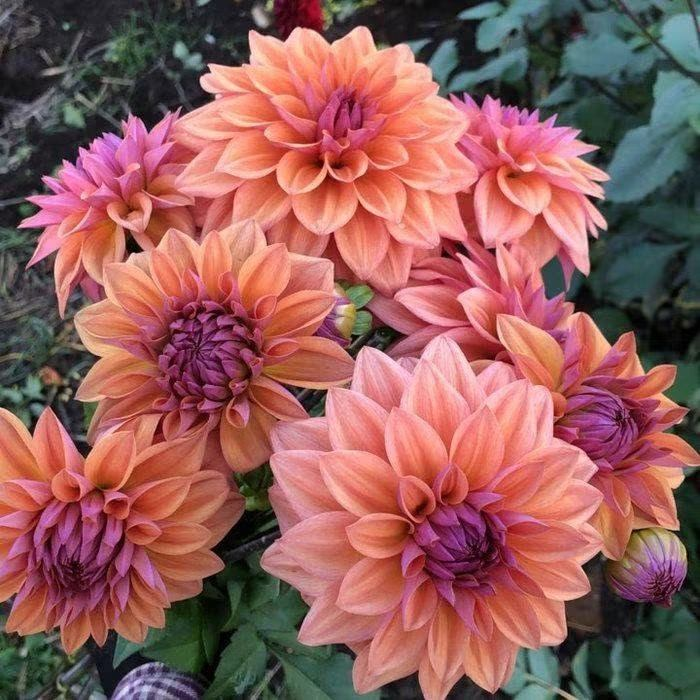
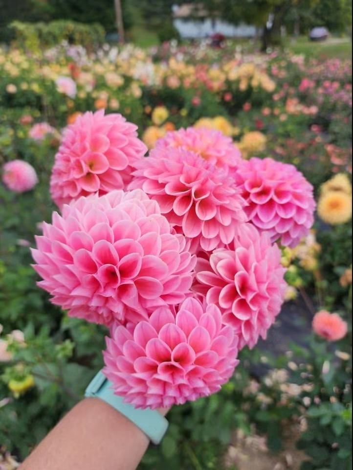
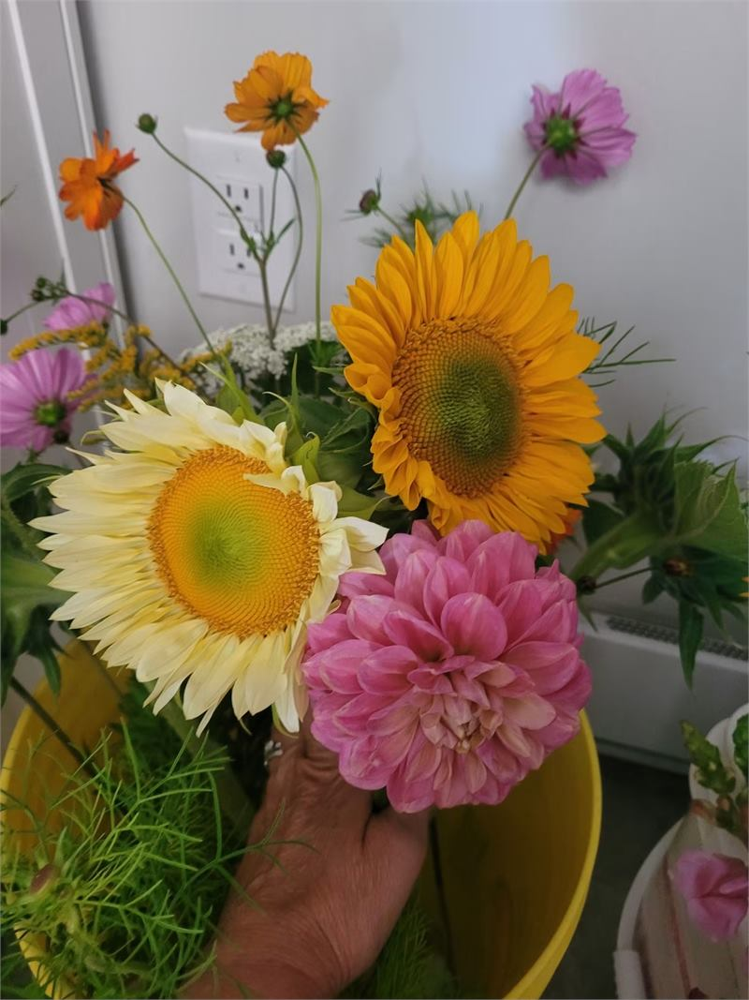
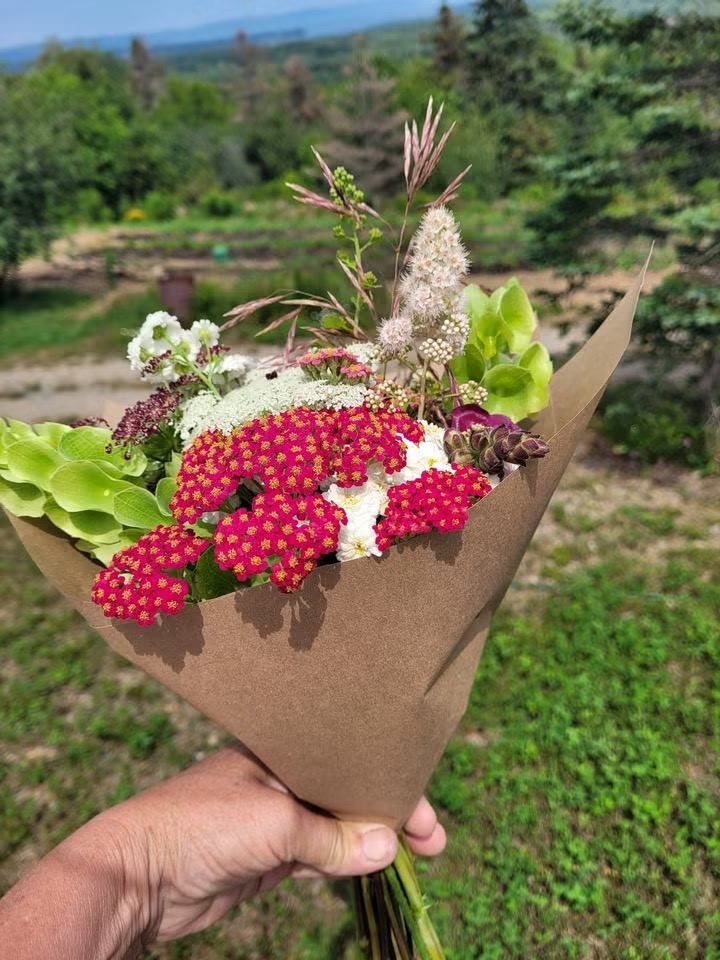
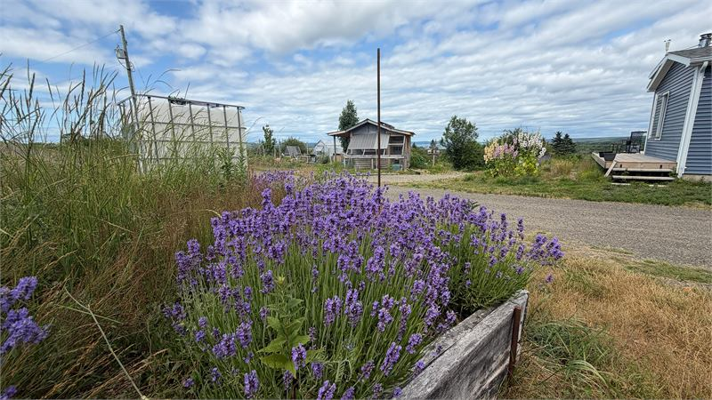
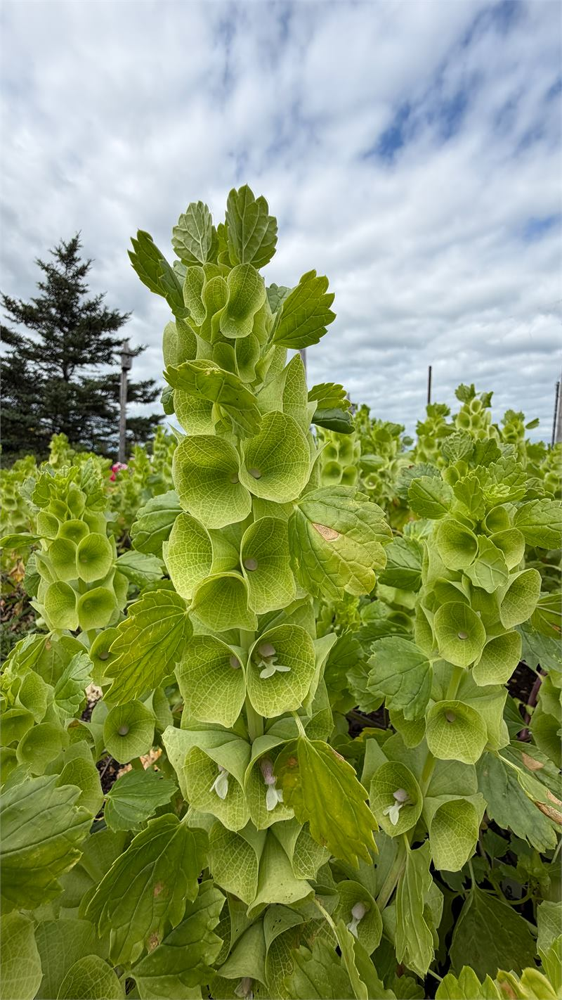
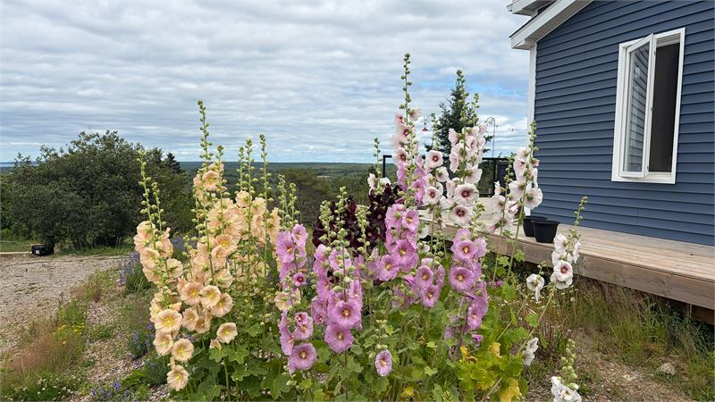
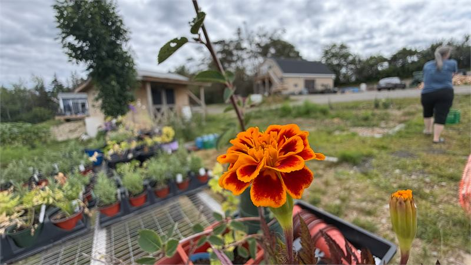
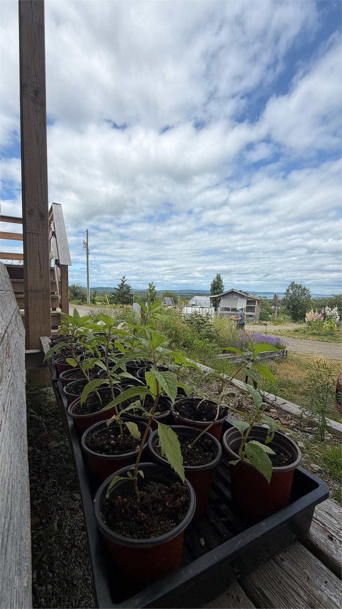
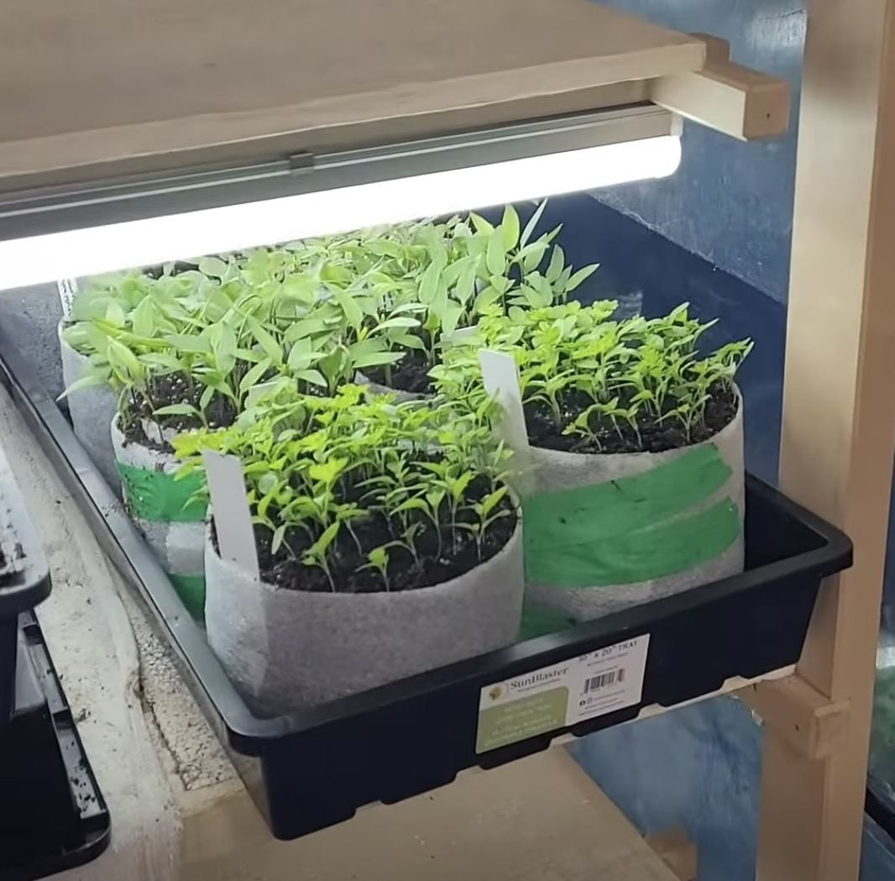
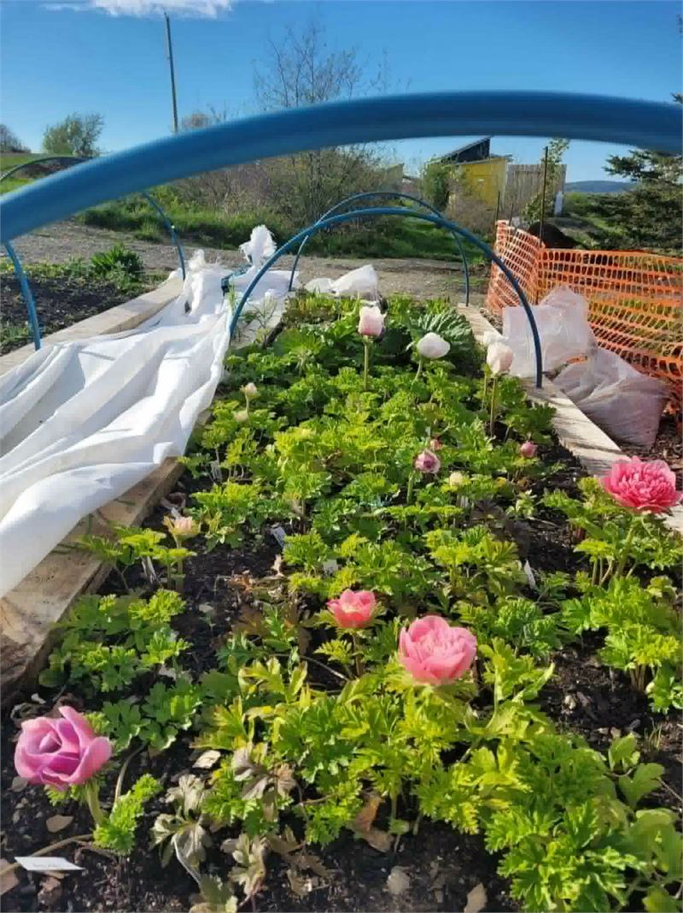
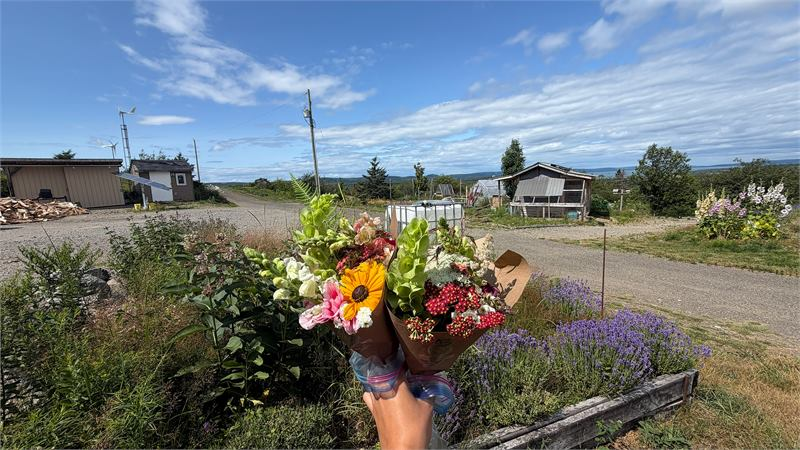
HOW TO GET YOUR PLANTS
Four Ways to Get Your Hands on Something
We don't sell online, and there's a good reason for that. Plants are living things. A tray that looks perfect on Monday can be sold out, or simply not ready, by Thursday, and we'd rather not take your money for something we can't be certain we can hand over.
Come Up to the Farm
The best option, because you get to choose your own plants and see how they were grown. Check Facebook first to make sure we're about, or send a message and we'll arrange a time.
Catch Us at a Market
We set up at markets around the area through the season with seedlings, bouquets and herbs. We post the dates on Facebook before each one.
Message Us on Facebook
Ask what's ready, ask us to hold something back, or ask whether a particular plant will suit your garden. We answer as quickly as we can.
Send Us a Note
Use the form below and tell us what you're after. If we have it, we'll set it aside for you and let you know when to come by.
Ask About a Plant
Tell us what you're looking for. If we have it, we'll set it aside and let you know when to come by.